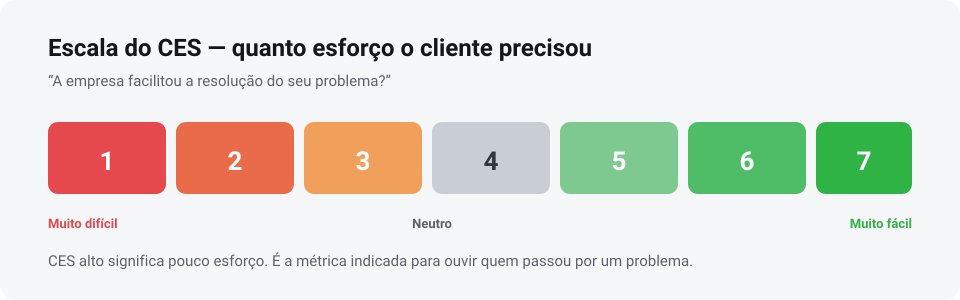

Métrica
O que é CES: a métrica de esforço do cliente
O CES mede quanto trabalho o cliente teve para resolver o que precisava. Em jornadas com problema, ele aponta o que o NPS e o CSAT não veem.
CES (Customer Effort Score) mede o esforço que o cliente precisou fazer para resolver um problema. A pergunta clássica é “a empresa facilitou a resolução do seu caso?”, com resposta em escala.
Quanto menor o esforço, melhor. É a métrica mais indicada para jornadas de suporte, troca, devolução e segunda via — situações em que o cliente já chegou incomodado.
Neste artigo
O que o CES mede
O CES parte de uma constatação prática: cliente não odeia errar, odeia ter trabalho para resolver. Um problema bem resolvido, com pouco esforço, costuma gerar mais lealdade do que a ausência de problema.
Por isso o CES é bom em:
- medir a qualidade do suporte e do pós-venda;
- avaliar políticas de troca, devolução e cancelamento;
- detectar burocracia — quantas etapas, quantos canais, quanto tempo;
- priorizar automações e ajustes de processo.
A escala de esforço
A escala mais usada é de 1 a 7, ancorada em “muito difícil” e “muito fácil”. Também funciona com 5 pontos ou com carinhas.

Como calcular o CES
Há dois jeitos, e o mais comum é bem simples: média das respostas. Some todas as notas e divida pelo número de respostas. Numa escala de 7, um CES 5,9 indica pouco esforço.
Outro formato, mais parecido com o NPS, é o percentual de notas altas (6 e 7) menos o de notas baixas (1 a 3). Escolha um critério e mantenha — misturar os dois no mesmo histórico invalida a comparação.
Quando usar o CES
Use o CES quando o cliente passou por um processo que exige ação dele: abrir um chamado, pedir segunda via, resolver uma cobrança, trocar um produto.
- Suporte e SAC: quanto trabalho deu resolver o caso?
- Autoatendimento: o cliente achou o que precisava sozinho?
- Burocracia interna: quantas vezes o cliente precisou repetir a mesma informação?
O CES não substitui o NPS nem o CSAT. Ele responde uma pergunta que os outros dois não fazem: “foi fácil?”.
CES, NPS e CSAT juntos
As três métricas cobrem dimensões diferentes da experiência:
- NPS — o cliente recomenda a empresa? (o que é NPS)
- CSAT — o cliente ficou satisfeito com o atendimento? (o que é CSAT)
- CES — foi fácil resolver?
Uma combinação útil é perguntar o CES logo depois de uma interação de suporte e reservar o NPS para uma leitura periódica da relação. Assim cada pergunta aparece no momento em que faz sentido.
Regra prática: se o esforço é alto, a satisfação cai e a lealdade some — nessa ordem. Reduzir etapas costuma ser mais barato do que compensar com desconto.
Próximo passo
Meça esforço, satisfação e lealdade
O mesmo totem pode rodar NPS, CSAT, CES, escala de carinhas e quiz, com relatórios por período.
Dúvidas
Perguntas frequentes sobre CES
O que significa CES?
Customer Effort Score, ou pontuação de esforço do cliente. Mede quanto trabalho o cliente teve para resolver o que precisava.
CES alto é bom ou ruim?
Alto é bom: significa que o cliente precisou de pouco esforço, porque a escala vai de “muito difícil” a “muito fácil”.
Qual a diferença entre CES e CSAT?
O CSAT pergunta se o cliente ficou satisfeito; o CES pergunta se foi fácil. Um cliente pode estar satisfeito com o fim e ter passado por um processo cansativo.
Preciso do CES se já uso NPS e CSAT?
Se a empresa tem jornadas de suporte, troca ou cobrança, o CES acrescenta uma leitura que as outras duas não capturam. Em operações sem esse tipo de processo, ele pode ser dispensável.
Conteúdo atualizado em 04/11/2026.